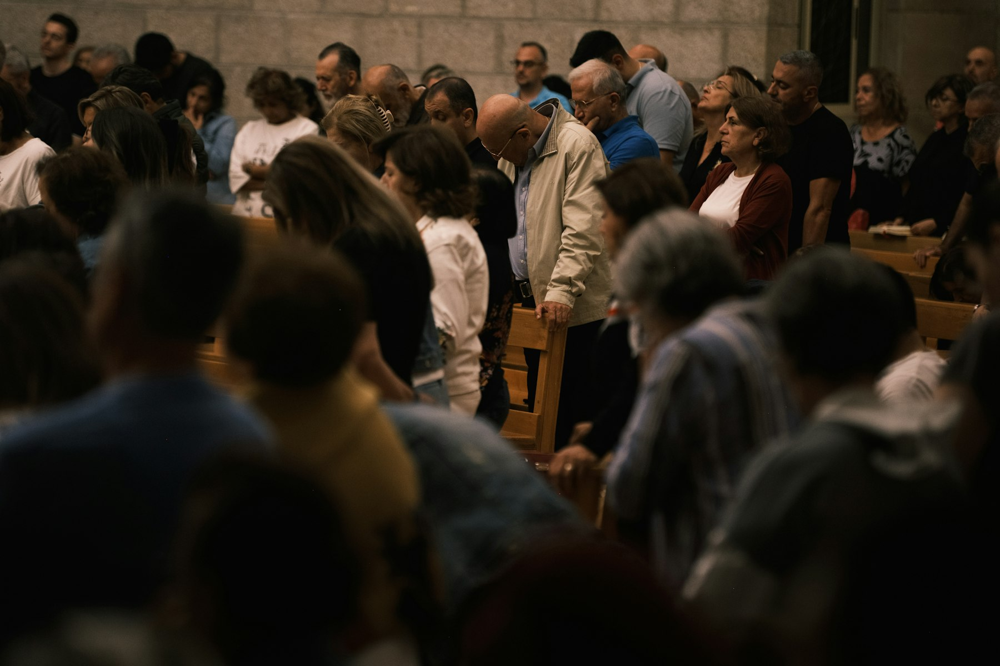
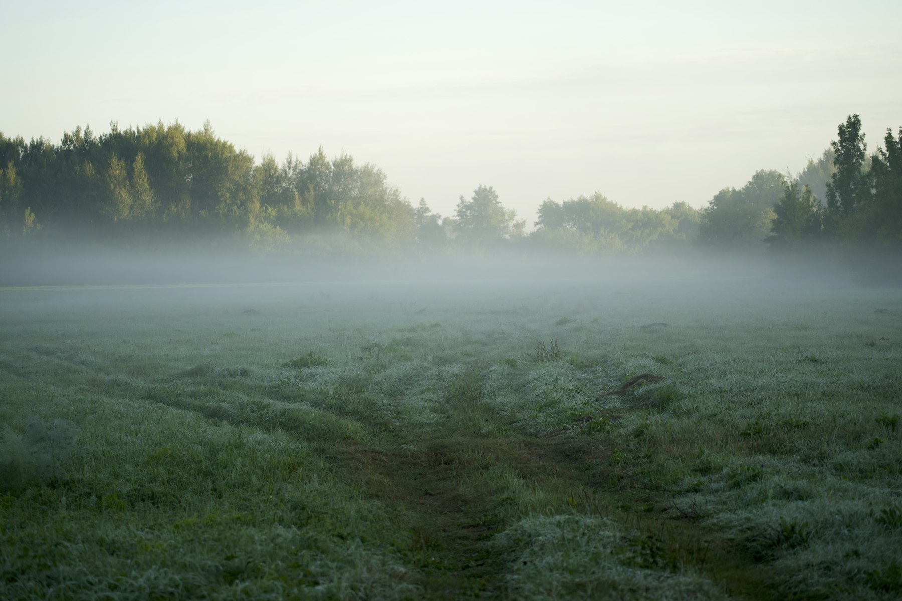
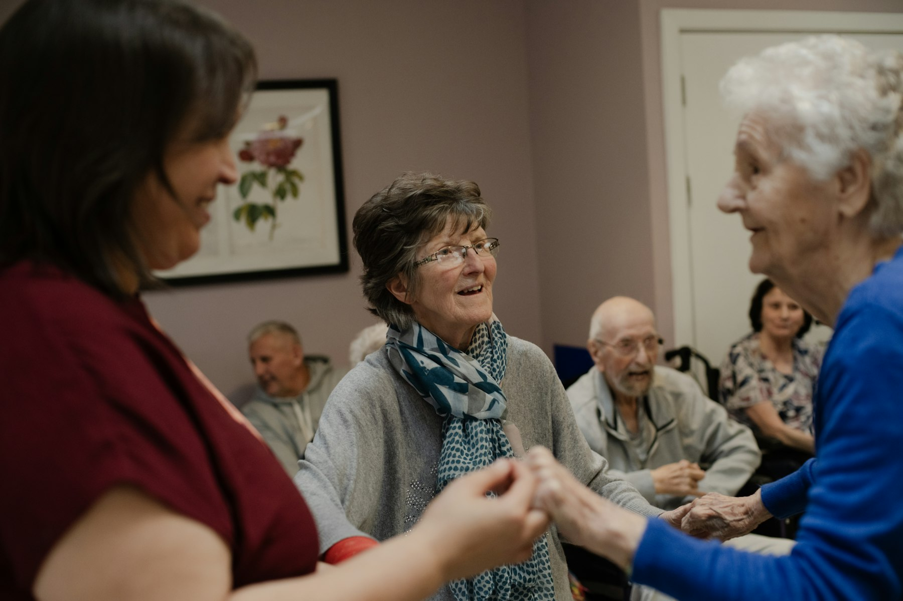

Section one
i.Logo
The mark is an arched chapel door with a cross standing on a small hill: Calder Hill. Its two arch lines are the same double rule used across every page, so the logo and the layout feel like one family.
Clear space
Leave space around the logo equal to the width of the arch on every side. Nothing else sits inside that margin, not even a rule.
Smallest sizes
Primary wordmark 140px wide on screen, 1.25 inches in print. The mark alone can go down to 16px as a favicon.
Please do not
- Stretch, tilt or outline the logo.
- Set the name in any other typeface.
- Place it on a busy part of a photo.
- Recolor it outside forest, ivory and brass.
Section two
ii.Color
Warm paper grounds, a deep forest green that does most of the talking, brass for fine details and a little burgundy for emphasis. Every text pair below meets WCAG AA for body text, at least 4.5 to 1.
| Text | Background | Ratio | Use |
|---|---|---|---|
| Ink #24221D | Parchment | 13.87:1 | Body text |
| Stone #5B564B | Parchment | 6.37:1 | Secondary text |
| Stone #5B564B | Vellum | 5.67:1 | Secondary text on bands |
| Burgundy #7A2532 | Parchment | 8.57:1 | Labels, links |
| Brass Deep #7A5D24 | Parchment | 5.36:1 | Small meta text |
| Linen #E9E2D0 | Forest | 9.20:1 | Body text on forest |
| Sage Grey #C5C9B8 | Forest | 7.03:1 | Secondary text on forest |
| Brass Light #D2B574 | Forest | 6.00:1 | Labels on forest |
| Ivory #FCF9F1 | Forest | 11.30:1 | Primary button text |
| Deep Forest #152A20 | Brass Light | 7.66:1 | Hero button text |
Section three
iii.Typography
Newsreader carries the voice: a refined text serif with true display cuts and a lovely italic. Commissioner, set with its flared strokes, does the reading. Labels are serif capitals with wide spacing, like the running heads of a good book.
Newsreader
Display and headings. Light 300 for big statements, Regular 400 for titles, Medium 500 for the wordmark and small titles, Italic for the one word that matters. Optical sizes 6 to 72.
ABCDEFGHIJKLMNOPQRSTUVWXYZ
abcdefghijklmnopqrstuvwxyz 0123456789
Commissioner, flared
Body, buttons, navigation and forms. Regular 400 for reading, Semibold 600 for buttons and links. Flare axis set to 100 for its gentle, chiselled endings.
ABCDEFGHIJKLMNOPQRSTUVWXYZ
abcdefghijklmnopqrstuvwxyz 0123456789
Sample setting
Your first Sunday, plainly explained
Park on Calder Lane, follow the brick path to the side door and you will find coffee before you find a pew.
Services last about an hour and fifteen minutes. The 9:00 is quieter, with hymns and the organ. The 11:00 has the choir and a small band, and children’s classes run at the same time. Wear whatever you like; you will see suits and you will see sneakers.
We visited once and someone remembered our names the next Sunday. Eight years later, this is home.Margaret L. · Member since 2018
Pull quotes and reviews are set in Newsreader Italic at 28 to 34px, with a fine double rule above and the name in small capitals.
Section four
iv.Photography
Warm, natural light and real moments between people of every age. We show a congregation that has been here a long time and is still glad to see you. Photos sit in ivory mats or inside the arch, like prints in a family album.





Do
- Shoot in warm, natural light: morning windows, golden hour, lamps.
- Show adults of every age, and families in groups.
- Catch people mid-conversation, mid-laugh, mid-song.
- Leave quiet space on one side for words.
- Keep color natural, with a slight warm lift in the shadows.
Avoid
- Stage lights, haze and concert-style crowd shots.
- Close-ups of a single child, or readable name tags.
- Heavy filters, cool blue grades or black and white.
- Posed lineups and empty rooms with no people.
- Other churches’ logos, shirts or signs as the subject.
Section five
v.Graphic elements
A short kit, used with restraint. Fine double rules do most of the work. The fleuron appears once or twice a page at most, never as wallpaper.
Double rule
Two hairlines with a gap. Under the header, around outline buttons, above pull quotes.
Label with rule
Serif capitals, wide spacing, a short brass double rule before. Above every section title.
Arch frame
The chapel window. For the hero photo, story posts and the logo. Always with its brass outline.
Fleuron
A small diamond flourish between rules. Use once on a page, as a pause.
Roman numerals
Italic numerals for lists and numbered rows, set in brass on forest or brass deep on paper.
Linen ground
A faint woven texture on forest panels, so large dark areas feel like cloth, not plastic.
Diamond separator
A small brass diamond between items of meta text, in place of bars or bullets.

Fellowship hourMounted print
An ivory mat and an italic caption. Photos are kept, not just shown.
Section six
vi.Buttons and interface
Square shoulders with a 2px corner. One filled button per view; everything else wears the double rule outline. Buttons and menu names in Title Case, with an arrow only on the primary button and on text links.
On paper
On forest
Small Groups
Twenty tables across Richmond, meeting in homes.
Find a group →Forms and rows
Demo only: a sample email is filled in. Nothing is sent.
Parking
Free on Calder Lane and behind the parish hall.
Section seven
vii.Voice and tone
We sound like a pastor who has known the neighborhood for years: calm, kind and specific. Short sentences. No jargon, no hype, no em dashes, no emojis.
Five words
- SteadyWe have been here since 1891. We do not need to shout.
- WarmEvery sentence assumes the reader is welcome.
- PlainspokenSay where to park before saying what we believe about parking.
- HospitableWrite like you are holding the door and pouring the coffee.
- HopefulOld roots, but our best Sundays are still ahead.
We say, we avoid
| We say | We avoid |
|---|---|
| Come as you are. Sit where you like. | Experience our dynamic worship environment. |
| Sundays at 9:00 and 11:00 AM. | Multiple service options available weekly. |
| Our next step for you is lunch with the pastors. | Join our assimilation pathway. |
| We will pray for you by name this week. | Submit a prayer ticket. |
| The bell tower needs help. Here is the plan. | Do not miss this once-in-a-lifetime opportunity! |
| Psalm 121, with Pastor Ruth. | A life-changing, must-hear message. |
Section eight
viii.Social posts
Three square posts and one story, built from the same kit: arch, double rule, Newsreader with one italic word, and our own photos. Every post names a time, a place or a next step.
Come as you are.
Richmond, Virginia
Sunday inviteWeekly, Thursday to Saturday. Feed and Facebook.
Scripture cardMonday, from Sunday’s text. Feed, then shared to stories.
Wednesday supper
6:00 PM in the parish hall. Bring a friend; we will set another plate.
Event postTuesday. Feed and a Facebook event.
Your first Sunday
- i.Park on Calder Lane
- ii.Coffee in the parish hall
- iii.Sit anywhere you like
Plan Your VisitStorySaturday evening, with a link sticker.
Using the kit
Built once in Canva, used every week
Every Wednesday at 6:00 PM the long tables come out in the parish hall. Soup, bread, something sweet and good company. No sign-up, no cost, no speeches.
Bring a friend, or come on your own and we will introduce you around.
#RVA #RichmondVA #RVAcommunity #CalderHillChapel